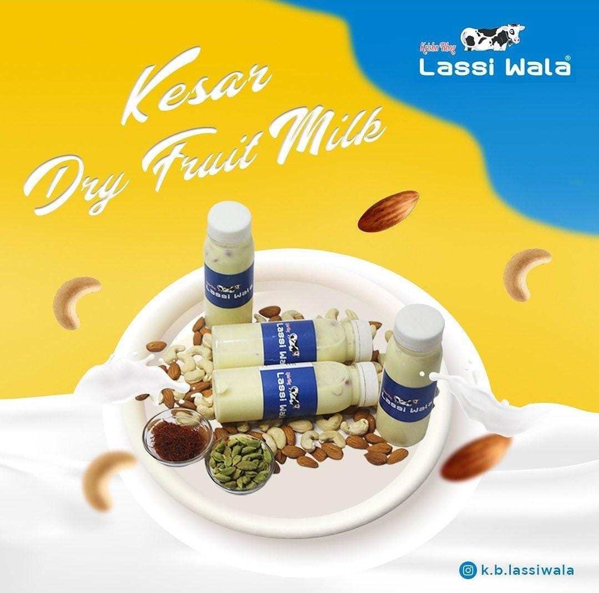

Krishnbhog Lassiwala
Kesar Dryfruit Milk

Description :
This Healthy Saffron Milk as the name mentions is a warm, thickened milk-based drink that is infused with the flavors of saffron and is enriched with dry fruits. Make this 3-ingredients Indian Kesar Milk for a soothing winter drink. Here is how to make it.
Ingridients :
- Milk
- Sugar
- Natural Flavour
- Custard Powder
- Cream
- Saffron
- Dryfruit
Steps :
- Heat the milk fully.
- Add Sffron in the Milk.
- Add Cream while heating.
- Add Sugar
- Add Custard Powder and Natural Flavour.
- Cut the dryfruits like Almond, Cashew Nut, Hazel Nut and Pista into small pieces.
- Premix the dryfruit into the milk.
- Enjoy the Milk and feel the richness.